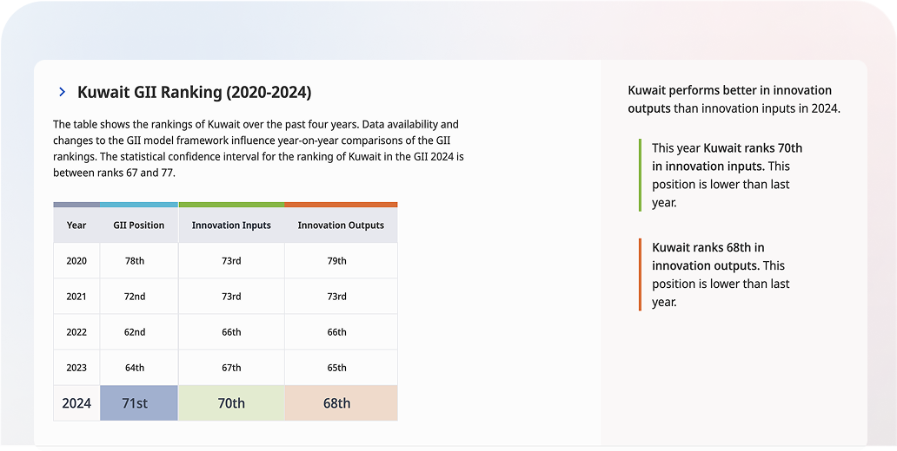

Innovation Index (GII) and Global
Competitiveness Index (GCI)
A Comprehensive Snapshot Of Kuwait's Innovation Ecosystem, Global Rankings, And Future Opportunities.


A Comprehensive Snapshot Of Kuwait's Innovation Ecosystem, Global Rankings, And Future Opportunities.
Indicators evaluate Kuwait's ability to foster & sustain innovation.
Covers Global Innovation Index (GII), Global Competitiveness Index (GCI) and other core metrics.
Offers data-driven insights and recommendations for improvement.
This index is calculated by averaging the scores of two indices —the innovation input index and the innovation output index (explained in the next paragraph). The scores show how strong or weak a country is in that area compared to others.
The Innovation Index refers to a composite measurement designed to evaluate and compare the innovation performance of countries, regions, or organizations. It considers various factors that influence the capacity to innovate, such as research and development (R&D) activities, technological outputs, infrastructure, education, and human capital. The index typically incorporates both inputs (resources and conditions fostering innovation) and outputs (tangible results of innovation efforts).
Global Innovation Index (GII) Is A Comprehensive Ranking That Measures The Innovation Performance Of Countries And Economies Around The World. Published Annually By The World Intellectual Property Organization (WIPO), In Partnership With Cornell University And INSEAD, The GII Provides Insights Into The Factors That Drive Innovation, Helping Policymakers, Businesses, And Researchers Understand A Country's Innovation Landscape.
3.1.1
Methodology
This Index Is Calculated By Averaging The Scores Of Two Indices -The Innovation Input Index And The Innovation Output Index (Explained In The Next Paragraph). The Scores Show How Strong Or Weak A Country Is In That Area Compared To Others. The Tables Below Summarize These Indicators And Kuwait's Performance/Ranking In It.
Political Stability, Regulatory Quality, And Institutional Framework.
Quality Of Education, R&D Spending, And The Availability Of Skilled Workers.
Access To And Quality Of Physical And Digital Infrastructure.
Access To Finance And Other Startups.
Knowledge Workers, Innovation Linkages, And Knowledge Absorption.
Kuwait performance score is 28.10 which positions Kuwait in the 71st rank out of 132 countries (see table 1 below for the score. This marks a decline from its 64th position in the 2023 report, where it had a score of 29.90. (The figure below shows Kuwait's ranking in GII Index for the last 5 years.)

Kuwait highest ranks are in Human capital and research (53rd), Infrastructure (60th), Institutions (66th) and Knowledge and technology outputs(67th).
Kuwait performs above the regional average (Northen Africa and western Asia) in Human capital and research, Infrastructure.
Kuwait lowest ranks are in Business sophistication (120th), Market sophistication (76th) and Creative outputs (69th).
The chart below shows the ranking and GII score in comparison to GCC. Kuwait is ranked in the 4th place in comparison to other GCC countries.
Enhance research and development capabilities by increasing government and private sector investment. Focus on establishing world-class research facilities, supporting university research programs, and creating incentives for R&D activities across various industries.
Strengthen the financial ecosystem to better support innovation and entrepreneurship. Develop venture capital funds, improve access to startup financing, and create specialized financial products for technology companies and innovative businesses.
Accelerate the development of digital infrastructure including 5G networks, fiber optic connectivity, and smart city initiatives. Invest in cybersecurity capabilities and digital government services to create a robust foundation for digital innovation.
Streamline patent application processes and provide support for inventors and researchers. Establish patent education programs, offer financial assistance for patent applications, and create intellectual property protection frameworks to encourage innovation.
Create comprehensive support ecosystems for small and medium enterprises and startups. Provide business incubators, mentorship programs, regulatory sandboxes, and simplified business registration processes to foster entrepreneurship and innovation.
The Global Competitiveness Index (GCI) by IMD (World Competitiveness Center) is a comprehensive annual ranking that measures the competitiveness of countries based on their ability to foster sustainable economic growth. This index evaluates the factors that drive a country's productivity, economic performance, and overall competitiveness. The ranking is measured by The IMD World Competitiveness Rank published annually and is widely recognized by policymakers, businesses, and researchers. IMD publishes 2 rankings that address Competitiveness? Or the statement is incomplete?
Which Is Defined By 4 Main Aspects: Economic Performance, Government Efficiency, Business Efficiency, And Infrastructure.
The Defines Digital Competitiveness Into Three Main Factors: Knowledge, Technology, And Future Readiness
The methodology used by the IMD World Competitiveness Center to develop the IMD World Digital Competitiveness Ranking also applies to the IMD World Competitiveness Ranking with certain nuances. methodology of the WDCR defines digital competitiveness into three main factors. In turn, each of these factors is divided into three sub-factors which highlight every facet of the areas analysed. Altogether, the WDCR features nine such sub-factors (see figure below)
These nine sub-factors comprise 59 criteria. Each sub-factor, independent of the number of criteria it contains, has the same weight in the overall consolidation of results, that is approximately 11.1%. The 59 criteria include 22 indicators that are only used in the assessment of the WDCR ranking.
Kuwait is ranked 37th out of 67 countries in the World Competitiveness Ranking, improvements proving one position from last year(38th) due to improvements reflected mainly in government efficiency and administrative reforms, noting that the latest ranking available for Kuwait before 2023 was in 2019 (ranked in 46th place among 141 countries)
| Category | Score |
|---|---|
| Economic performance | 34.51 |
| Government efficiency | 34.51 |
| Business efficiency | 34.51 |
| Infrastructure | 34.51 |
| GCI Factors | Kuwait Ranking 2024 |
|---|---|
| Knowledge | 48 |
| Technology | 44 |
| Future-Readiness | 45 |
Based on Kuwait’s Innovation eco-system analysis, the following sectors can contribute to the factors and sub factors that feeds into improving Kuwait’s WCR and WCDR:
contributing to government efficiency and technology
infrastructure.
like schools, higher education institutions and research institute: that are the arm of building the talents and contribute to the Knowledge factor.
(National Fund, Banks, Financial firms, Private sectors, New Technology-based
firms, SMEs. etc.)
the growth and the development of this sector will contribute to the Economic
performance and Business efficiency.
Gross domestic expenditures on research and development (R&D), expressed as a percent of GDP. They include both capital and current expenditures in the four main sectors: Business enterprise, Government, Higher education and Private non-profit. R&D covers basic research, applied research, and experimental development.
Quality of Math and Science Education: Evaluates the effectiveness of education systems in delivering strong foundations in mathematics and science. Nations with better quality STEM education tend to lead in global innovation rankings, as they produce the researchers, engineers, and scientists necessary to drive new technologies.
After analysing the factors influencing the GCI ranking and considering Kuwait's innovation ecosystem with its various components and contributors, the GCI ranking can be enhanced by the involvement of the following sectors:
Strengthen the financial ecosystem to better support innovation and entrepreneurship. Develop venture capital funds, improve access to startup financing, and create specialized financial products for technology companies and innovative businesses.
Accelerate the development of digital infrastructure including 5G networks, fiber optic connectivity, and smart city initiatives. Invest in cybersecurity capabilities and digital government services to create a robust foundation for digital innovation.
Measured by the number of Intellectual Property (IP) filings made worldwide by applicants from each country of 196 countries. The latest available IP filling sheet available was in 2023 by WIPO. .
After analysing the factors influencing the GCI ranking and considering Kuwait's innovation ecosystem with its various components and contributors, the GCI ranking can be enhanced by the involvement of the following sectors:
Strengthen the financial ecosystem to better support innovation and entrepreneurship. Develop venture capital funds, improve access to startup financing, and create specialized financial products for technology companies and innovative businesses.
Measured by the number of Intellectual Property (IP) filings made worldwide by applicants from each country of 196 countries. The latest available IP filling sheet available was in 2023 by WIPO. .
After analysing the factors influencing the GCI ranking and considering Kuwait's innovation ecosystem with its various components and contributors, the GCI ranking can be enhanced by the involvement of the following sectors:
Strengthen the financial ecosystem to better support innovation and entrepreneurship. Develop venture capital funds, improve access to startup financing, and create specialized financial products for technology companies and innovative businesses.
Kuwait’s strength lies in ICT Infrastructure as it comes in the first place in “ICT access” and “ICT use” indices . However, weaknesses in certain areas such as the relatively low ranking in high-quality scientific articles suggest a need to bolster research activities and outputs. Additionally, while Kuwait’s R&D expenditure shows a moderate commitment, increasing this investment could further stimulate innovation and economic diversification. The following are recommendations that may help improve Kuwait’s ranking in the innovation indicators mentioned throughout the report.
Enhance research funding: Allocate more resources to support scientific research, particularly in areas aligned with national priorities.
Strengthening education in STEM Fields: Invest in improving the quality of math and science education to build a skilled workforce capable of driving innovation.
Promote patent activities: Encourage inventors and researchers to file
patents by providing
financial incentives and streamlined processes.
By focusing on these areas, Kuwait’s innovation landscape can be slightly enhanced, addressing key indicators, and pursuing a culture of scientific and innovation excellence.